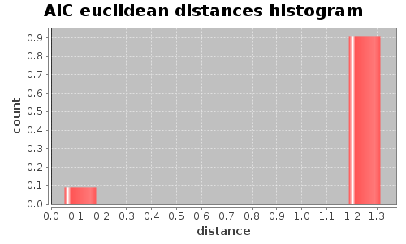
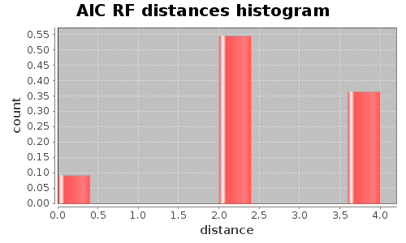

Application Meta
jModeltest 2.1
(c) 2011-onwards D. Darriba, G.L. Taboada, R. Doallo and D. Posada,(1) Department of Biochemistry, Genetics and Immunology
University of Vigo, 36310 Vigo, Spain.
(2) Department of Electronics and Systems
University of A Coruna, 15071 A Coruna, Spain.
e-mail: ddarriba@udc.es, dposada@uvigo.es
Sun May 12 21:33:21 EDT 2013
Linux 3.8.0-19-generic, arch: amd64, bits: 64, numcores: 4
| Citation: | Darriba D, Taboada GL, Doallo R and Posada D. 2012. "jModelTest 2: more models, new heuristics and parallel computing". Nature Methods 9, 772. |
 Back to top
Back to top Settings
Arguments = -d dna.fasta.aligned.dat.txt -g 4 -f -AIC -BIC -a -S BESTInput Alignment: "dna.fasta.aligned.dat.txt"
NumTaxa = 10
Length = 705
Phyml version = 3.0
Phyml binary = PhyML_3.0_linux64
Candidate models = 12
number of substitution schemes = 3
including models with equal/unequal base frequencies (+F)
including only models without a proportion of invariable sites
including models with/without rate variation among sites (+G) (nCat = 4)
Optimized free parameters (K) = Substitution parameters + 17 branch lengths + topology
Base tree for likelihood calculations = Maximum Likelihood
Tree topology search operation = Best of {NNI, SPR}
Model Optimization Results
| ID | Name | Partition | -lnL | p | fA | fC | fG | fT | ti/tv | R(a) | R(b) | R(c) | R(d) | R(e) | R(f) | p-inv | shape |
|---|---|---|---|---|---|---|---|---|---|---|---|---|---|---|---|---|---|
| 1 | JC | 000000 | 5196.5764 | 18 | - | - | - | - | - | - | - | - | - | - | - | - | - |
| 2 | JC+G | 000000 | 4953.2383 | 19 | - | - | - | - | - | - | - | - | - | - | - | - | 0.4920 |
| 3 | F81 | 000000 | 5130.8161 | 21 | 0.2689 | 0.2952 | 0.1423 | 0.2936 | - | - | - | - | - | - | - | - | - |
| 4 | F81+G | 000000 | 4860.0810 | 22 | 0.2913 | 0.3115 | 0.1268 | 0.2704 | - | - | - | - | - | - | - | - | 0.4430 |
| 5 | K80 | 010010 | 5125.0408 | 19 | - | - | - | - | 1.1744 | - | - | - | - | - | - | - | - |
| 6 | K80+G | 010010 | 4862.7225 | 20 | - | - | - | - | 1.5667 | - | - | - | - | - | - | - | 0.4450 |
| 7 | HKY | 010010 | 5049.1604 | 22 | 0.2867 | 0.2933 | 0.1352 | 0.2848 | 1.2523 | - | - | - | - | - | - | - | - |
| 8 | HKY+G | 010010 | 4714.4802 | 23 | 0.3479 | 0.3064 | 0.1027 | 0.2430 | 3.0435 | - | - | - | - | - | - | - | 0.2840 |
| 9 | SYM | 012345 | 5010.2430 | 23 | - | - | - | - | - | 7.9591 | 7.3298 | 5.6827 | 1.2392 | 13.6391 | 1.0000 | - | - |
| 10 | SYM+G | 012345 | 4762.0716 | 24 | - | - | - | - | - | 6.3215 | 5.8125 | 4.6344 | 0.6266 | 20.1962 | 1.0000 | - | 0.4360 |
| 11 | GTR | 012345 | 4994.7969 | 26 | 0.2643 | 0.2701 | 0.1776 | 0.2882 | - | 6.3483 | 7.8366 | 4.3178 | 1.3160 | 10.3391 | 1.0000 | - | - |
| 12 | GTR+G | 012345 | 4709.5683 | 27 | 0.3553 | 0.2981 | 0.1192 | 0.2274 | - | 1.0529 | 4.6401 | 1.6190 | 0.6450 | 10.7125 | 1.0000 | - | 0.2900 |
There are 3 different topologies. The following table shows the models supporting each topology and the rank according to each Information Criterion, as well as Robinson-Foulds and Euclidean distances with the tree of the best-fit model.
| ID | Models | Topology | AIC | BIC | AICc | DT | |
|---|---|---|---|---|---|---|---|
| 0 |
HKY+G GTR+G
|
RANK | 0 | 0 | - | - | |
| Weight | 1.0000 | 1.0000 | - | - | |||
| RF | 0 | 0 | - | - | |||
| AVG Distance | 2.6816e-02 | 2.6816e-02 | - | - | |||
| Distance VAR | 7.1907e-04 | 7.1907e-04 | - | - | |||
| 1 |
JC+G F81+G K80 K80+G HKY SYM+G
|
RANK | 1 | 1 | - | - | |
| Weight | 0.0000 | 0.0000 | - | - | |||
| RF | 2 | 2 | - | - | |||
| AVG Distance | 1.2533e+00 | 1.2563e+00 | - | - | |||
| Distance VAR | 1.2200e-03 | 1.2103e-03 | - | - | |||
| 2 |
JC F81 SYM GTR
|
RANK | 2 | 2 | - | - | |
| Weight | 0.0000 | 0.0000 | - | - | |||
| RF | 4 | 4 | - | - | |||
| AVG Distance | 1.3034e+00 | 1.3068e+00 | - | - | |||
| Distance VAR | 3.4393e-05 | 3.4644e-05 | - | - |
AIC Selection Results
Model selected
| Model | GTR+G | ||
|---|---|---|---|
| partition | 012345 | ||
| -lnL | 4709.5683 | ||
| K | 27 | ||
| freqA | 0.3553 | R(a) | 1.0529 |
| freqC | 0.2981 | R(b) | 4.6401 |
| freqG | 0.1192 | R(c) | 1.6190 |
| freqT | 0.2274 | R(d) | 0.6450 |
| ti/tv | - | R(e) | 10.7125 |
| R(f) | 1.0000 | ||
| p-inv | - | gamma | 0.2900 |
Best model tree
(Carp:0.23032217,Loach:0.32118561,((Human:0.89510891,((Whale:0.21326924,(Cow:0.19689184,Seal:0.33725970):0.05878093):0.07701508,(Mouse:0.18181510,Rat:0.15789049):0.22441587):0.20006875):0.37766765,(Frog:0.34966621,Chicken:0.95108502):0.03166440):0.28911811);
Display best model tree in PhyloWidget
| Model | -lnL | K | AIC | delta | weight | cumWeight |
|---|---|---|---|---|---|---|
| GTR+G | 4709.5683 | 27 | 9473.1366 | 0.0000 | 0.7134 | 0.7134 |
| HKY+G | 4714.4802 | 23 | 9474.9605 | 1.8239 | 0.2866 | 1.0000 |
| SYM+G | 4762.0716 | 24 | 9572.1433 | 99.0067 | 0.0000 | 1.0000 |
| F81+G | 4860.0810 | 22 | 9764.1620 | 291.0254 | 0.0000 | 1.0000 |
| K80+G | 4862.7225 | 20 | 9765.4451 | 292.3085 | 0.0000 | 1.0000 |
| JC+G | 4953.2383 | 19 | 9944.4767 | 471.3401 | 0.0000 | 1.0000 |
| GTR | 4994.7969 | 26 | 10041.5938 | 568.4572 | 0.0000 | 1.0000 |
| SYM | 5010.2430 | 23 | 10066.4861 | 593.3495 | 0.0000 | 1.0000 |
| HKY | 5049.1604 | 22 | 10142.3208 | 669.1842 | 0.0000 | 1.0000 |
| K80 | 5125.0408 | 19 | 10288.0815 | 814.9449 | 0.0000 | 1.0000 |
| F81 | 5130.8161 | 21 | 10303.6321 | 830.4955 | 0.0000 | 1.0000 |
| JC | 5196.5764 | 18 | 10429.1528 | 956.0163 | 0.0000 | 1.0000 |
| -lnL: | negative log likelihod |
| K: | number of estimated parameters |
| AIC: | Akaike Information Criterion |
| delta: | AIC difference |
| weight: | AIC weight |
| cumWeight: | cumulative AIC weight |
Confidence interval
There are 12 models in the 100.00% confidence interval:
GTR+G HKY+G SYM+G F81+G K80+G JC+G GTR SYM HKY K80 F81 JC

Euclidean distances histogram from each model optimized tree to GTR+G tree.
Euclidean distances histogram from each model optimized tree to GTR+G tree.

Robinson-Foulds distances histogram from the different topologies to GTR+G topology.
Robinson-Foulds distances histogram from the different topologies to GTR+G topology.
Model Averaged Phylogeny
| Selection criterion | AIC |
|---|---|
| Confidence interval | 100.00% |
| Consensus type | 50% majority rule |
(Carp:0.230322,Loach:0.321186,((Frog:0.349666,Chicken:0.951085)1.00:0.031664,(Human:0.895109,((Whale:0.213269,(Cow:0.196892,Seal:0.337260)1.00:0.058781)1.00:0.077015,(Mouse:0.181815,Rat:0.157890)1.00:0.224416)1.00:0.200069)1.00:0.377668)1.00:0.289118);
Display consensus tree in PhyloWidget
BIC Selection Results
Model selected
| Model | HKY+G | ||
|---|---|---|---|
| partition | 010010 | ||
| -lnL | 4714.4802 | ||
| K | 23 | ||
| freqA | 0.3479 | R(a) | - |
| freqC | 0.3064 | R(b) | - |
| freqG | 0.1027 | R(c) | - |
| freqT | 0.2430 | R(d) | - |
| ti/tv | 3.0435 | R(e) | - |
| R(f) | - | ||
| p-inv | - | gamma | 0.2840 |
Best model tree
(Carp:0.21365745,Loach:0.32138516,((Human:0.91928719,((Whale:0.22298115,(Cow:0.18865922,Seal:0.33670814):0.05886657):0.07642691,(Mouse:0.18477216,Rat:0.16578602):0.24820808):0.19003028):0.39634265,(Frog:0.34517185,Chicken:0.92514032):0.04010030):0.28893695);
Display best model tree in PhyloWidget
| Model | -lnL | K | BIC | delta | weight | cumWeight |
|---|---|---|---|---|---|---|
| HKY+G | 4714.4802 | 23 | 9579.7990 | 0.0000 | 0.9997 | 0.9997 |
| GTR+G | 4709.5683 | 27 | 9596.2079 | 16.4089 | 0.0003 | 1.0000 |
| SYM+G | 4762.0716 | 24 | 9681.5400 | 101.7410 | 0.0000 | 1.0000 |
| K80+G | 4862.7225 | 20 | 9856.6090 | 276.8100 | 0.0000 | 1.0000 |
| F81+G | 4860.0810 | 22 | 9864.4424 | 284.6433 | 0.0000 | 1.0000 |
| JC+G | 4953.2383 | 19 | 10031.0824 | 451.2834 | 0.0000 | 1.0000 |
| GTR | 4994.7969 | 26 | 10160.1069 | 580.3079 | 0.0000 | 1.0000 |
| SYM | 5010.2430 | 23 | 10171.3246 | 591.5256 | 0.0000 | 1.0000 |
| HKY | 5049.1604 | 22 | 10242.6012 | 662.8021 | 0.0000 | 1.0000 |
| K80 | 5125.0408 | 19 | 10374.6873 | 794.8882 | 0.0000 | 1.0000 |
| F81 | 5130.8161 | 21 | 10399.3543 | 819.5552 | 0.0000 | 1.0000 |
| JC | 5196.5764 | 18 | 10511.2004 | 931.4014 | 0.0000 | 1.0000 |
| -lnL: | negative log likelihod |
| K: | number of estimated parameters |
| BIC: | Bayesian Information Criterion |
| delta: | BIC difference |
| weight: | BIC weight |
| cumWeight: | cumulative BIC weight |
Confidence interval
There are 12 models in the 100.00% confidence interval:
HKY+G GTR+G SYM+G K80+G F81+G JC+G GTR SYM HKY K80 F81 JC
Euclidean distances histogram from each model optimized tree to HKY+G tree.
Robinson-Foulds distances histogram from the different topologies to HKY+G topology.
Model Averaged Phylogeny
| Selection criterion | BIC |
|---|---|
| Confidence interval | 100.00% |
| Consensus type | 50% majority rule |
(Carp:0.213657,Loach:0.321385,((Frog:0.345172,Chicken:0.925140)1.00:0.040100,(Human:0.919287,((Whale:0.222981,(Cow:0.188659,Seal:0.336708)1.00:0.058867)1.00:0.076427,(Mouse:0.184772,Rat:0.165786)1.00:0.248208)1.00:0.190030)1.00:0.396343)1.00:0.288937);
Display consensus tree in PhyloWidget